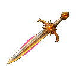
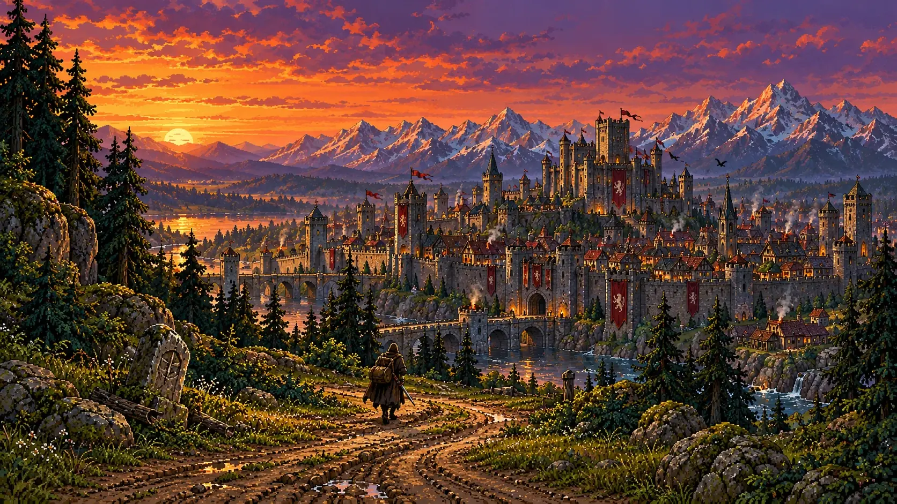
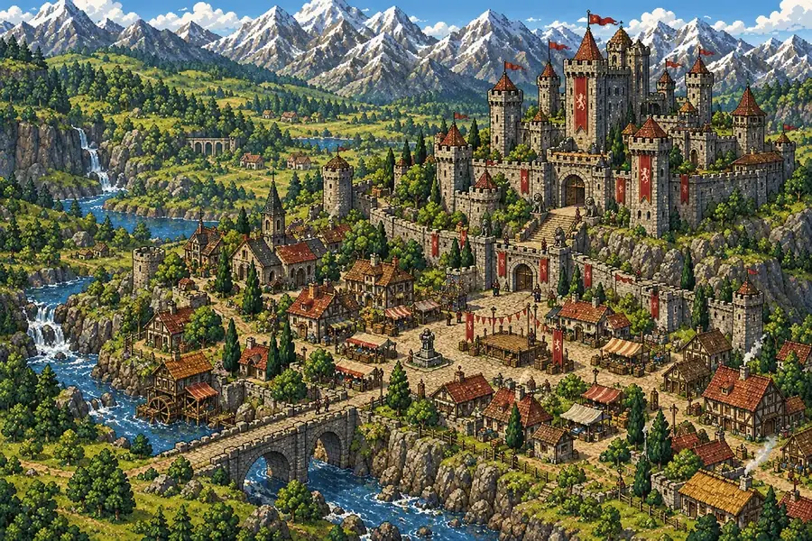
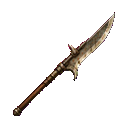
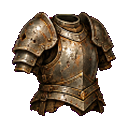
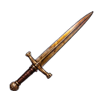
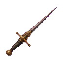
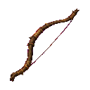
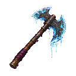
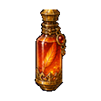

Dawnbreaker
No one remembers who forged it. Everyone who carried it was remembered.

Every legend starts in the crowd.
A dice-driven fantasy adventure in painted pixel art. You begin as a nobody at Crownhall, watching the greatest hero in Aldemere get knighted. What you do after that is yours to roll.
The book
Turn pages with the corners, the arrow keys, a swipe or the ribbons.
Chapter I
ou grew up on a farm at the edge of the Greywood. Today you stand in the square at Crownhall with ten thousand others while Ser Halvard Ashgrove is knighted. Everyone cheers. You are one voice among them, and you are nobody.
Conquest of Aldemere is a text adventure with painted scenes, turn-based fights and a story in three acts. Each risky choice and each blow is settled by a die. Your stats, your gear and your standing in the world tilt the odds, and no reroll saves you from a bad one.

Might, Agility, Wits, Spirit and Charm shape every roll. A clever plan helps. A good die helps more.
Painted pixel scenes for every place, a living map that opens as the story does, and a bestiary of foes that earn their pictures.
Who you help, who you spare and what you carry out of a room follow you into the next act. Several endings wait at the far end.
Chapter II
Nine painted tiles make the whole land. In the game, each part stays under fog until the story reaches it.

Chapter III
A dozen of the nearly forty foes. Each has its own pose, its own tricks and its own arena. Select one to read about it.
The pips are the foe’s threat, out of six. The more of them are lit, the less you should be there.
Chapter IV
Eight pieces from a ledger of nearly two hundred. Rarer things hide in barrows, bargains and bad ideas.

No one remembers who forged it. Everyone who carried it was remembered.

Tipped with a tooth the Greywyrm shed long before Ser Halvard came for it. Nothing it cuts heals clean.

Heavy, scarred and older than the kingdom. It fits as if it were waiting.

The blade holds a faint gold, as if a long evening were stored in it. It strikes first and rarely wrongly.

Cold even in summer. Finds the gap in anything.

Pale wood that hums faintly when strung.

Frost forms on the blade even by the fire.

A drop on the tongue and the whole body remembers being unhurt.
Chapter V
Eight faces, four ways to fight. Both are your choice, and neither decides how far you get. Select a face.
the Farmhand
Starting stats. In the game you may also spend the points freely.
Chapter V, continued
Three will fight for you if you earn them, two are no ordinary company, and one is a cat. Select a portrait.
Along the road
From the square at Crownhall to the gates of Thrumhold. There are more, and the book will not tell you where.
Chapter VI
Eight of the hundred painted scenes. Select one to see it larger.
A small trial
Every risky choice in the game is a roll like this one: a d20, your skill added, against how hard the thing is.
Select the die.
These numbers are only for the feel of it. You may roll again here. The game will not let you.
Chapter VII
The farm, the village, the forest, the first bandits and the first real danger. Playable from start to finish.
The marsh, the mountains and the coast open up. Places, foes and loot are being added a piece at a time.
Every road meets again. The ending depends on who you became on the way.
There is no public demo yet. When Act I is ready to be played by others, it will appear here first.
Chapter VIII
Open ledger
A foe you would like to fight, an item worth finding, a rule that feels wrong, a place on the map. I read every note. Suggestions are private, and nothing enters the game unless I choose it.
Write to me
For bugs, questions or anything that does not fit a suggestion, write directly.
email loads with the pageOpen in mail
Conquest of Aldemere
Every legend starts in the crowd.
A game in the making by Yasser Chettour. Build 0.54.8. All art and text on this site belong to the project.
Finis, for now
The rest is unwritten.
Finis, for now.